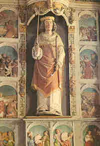
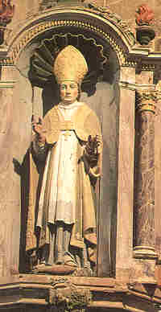
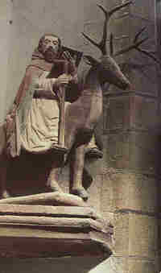
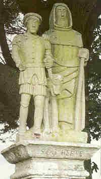
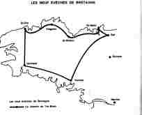

La liste officielle des saints reconnus par l'église catholique ne comporte que 3 saints originaires de Bretagne:
Saint Yves
(un “nouveau venu”, mort en 1303),
Saint Clair
(1er évêque de Nantes au 3ème siècle, inconnu à Quimper) et
Saint Corentin
(évêque de Quimper qui mourut en 460).
Et pourtant l'hagiographie bretonne compte
plus de 400 saints
, dont l'existence est incertaine: Saint Rittan de Crozon, Saint Riwalatr de Quimperlé, Saint Sutic de Guissény, Saint Thamec de Moélan, Saint Néventer de Plounéventer,
ou qui furent reconnus par l'Eglise sans être pour autant canonisés.
A partir de 1180
(Pape Alexandre III), seul le Pape peut conférer le titre de “Saint” à une personne défunte. Mais la plupart des saints bretons, si l'on en croit la tradition, ont vécu bien avant, à une époque ou la vénération publique et l'accord de l'évêque étaient seuls requis pour accéder à cette distinction.
Il n'y eut pour eux ni procès en canonisation, ni documents écrits. C'est pourquoi il est difficile de dire si les "saints" en question ont vraiment existé. En particulier le fait qu'un saint soit le patron éponyme d'un 'plou', d'un 'tré', ou d'un 'lan' (comme dans “Ploeven”, “Treguennec” ou “Landerneau”) ne saurait constituer une preuve: les personnages éponymes Even, Gwennec et Ternoc ont certainement existé, mais étaient ils les pieuses personnes que la tradition affirme qu'ils étaient?
C'est ainsi que le fameux (ou l'infâme)
Vortigern,
que les Britanniques considèrent comme un traître qui conclut avec les Saxons Hengist et Horsa un honteux traité et dont on assure qu'il avait épousé sa propre fille, est le saint éponyme du village breton de Saint-Gurthiern près de Quimperlé!
LES “VIES DES SAINTS”
Au Moyen-Âge, des moines consignèrent par écrit les récits traditionnels. Ces
"Vies des saints" (Vitae)
se ressemblent toutes plus ou moins et peuvent être ramenées à un petit nombre d'archétypes. Elles sont au nombre d'une cinquantaine, sans compter les versions multiples pour les saints les plus célèbres.
Rédigées entre le 7ème et le 13ème siècle, elles ont servies de base à l'historien
A. Le Moyne de la Borderie
pour le tableau qu'il trace de la Bretagne du 5ème au milieu du 7ème siècle dans son "Histoire de la Bretagne" (1905 - 1908). Ses successeurs du premier quart du 20ème siècle n'accordèrent plus aucun crédit à ces "Vitae".
Actuellement on admet que cette hagiographie n'est pas dépourvue de bases sérieuses, même si on reconnaît qu'elle vise essentiellement à l'édification du lecteur ou à la promotion de tel ou tel monastère ou siège épiscopal ou reliquaire en se réclamant d'une ancienneté remontant à l'arrivée des premiers Bretons. C'est que certaines de ces "Vitae" ont été rédigées peu de temps après les événements qu'elles relatent: moins d'un siècle dans le cas de la "Vie de Saint Samson", si l'on admet qu'elle fut composée vers 610.
De plus, même les textes moins anciens, comme la Vie de Saint Guénolé rédigée dans la seconde moitié du 9ème siècle ou la Vie de Saint Malo de Bili, procèdent de "Vitae" antérieures, à en juger par la forme ancienne des noms propres qu'elles contiennent. La seconde "Vie" de Saint Tugdual se réfère ainsi, expressément à une version plus ancienne en langue celtique. Il est vrai qu'il s'agit d'un artifice souvent employé pour donner plus d'importance au livre.
Les plus anciennes (St Guénolé, St Idunet, St Paul Aurélien datée précisément de 884) proviennent de l'abbaye de Landévennec, ainsi que de Redon et Dol, tandis qu'une série de Vies fut rédigée au 11ème siècle dans des abbayes au moment où elles furent restaurées (St Gildas, St Méen, St Judicaël). La production des centres épiscopaux ne prend de l'importance qu'à partir des 12ème et 13ème siècles: Quimper (St Corentin, Vie de St Ronan), Tréguier (St Maudez, St Efflam, St Budoc) et Vannes (St Goneri, St Gobrien, St Paterne). De cette même époque datent des Vies d'importance plus locale (Méloir, Hervé, Goulven, Lunaire ou Jacut...) dont il ne subsiste parfois que des résumés ou des extraits.
Les faits plausibles que ces récits relatent, lorsqu'ils ne sont pas corroborés par des sources sures, ne sont plus actuellement écartés systématiquement par les historiens qui s'efforcent de comprendre le mode d'expression par lesquels les chroniqueurs des siècles passés transcrivaient la réalité.
Le musicologue Donatien Laurent et l'historien L. Fleuriot, entre autres, ont montré que la tradition orale, - à laquelle ces "Vitae" font principalement appel -, peut conserver sans transformations majeures le souvenir d'événements passés. La Villemarqué n'a jamais affirmé rien d'autre.

Au 17ème siècle, le père
Albert Le Grand
s'efforça de rédiger un livre sur tous les saints bretons, en prenant pour argent comptant les traditions plus insolites.
Au début du 18ème siècle, un moine bénédictin de Rennes,
Dom Lobineau,
composa, lui aussi, des "Vies des Saints de Bretagne"
mais en se montant beaucoup plus critique que Le Grand. Il va même jusqu'à douter, par exemple, que
Saint Gildas
soit jamais venu en Bretagne, bien que le saint jouisse d'une grande popularité aux environs de l'abbaye de Ruis. Ce scepticisme exacerbé ira en croissant aux 19ème et 20ème siècles.
Il existe des rapports complexes entre le folklore breton et cette littérature hagiographique. Un petit nombre de légendes de saints qui figurent dans le
“Barzaz Breiz” de La Villemarqué
semble parfois évoquer le conflit entre les croyances préchrétiennes et la religion introduite par les immigrants bretons au 5ème siècle, ce que la littérature cléricale ne fait jamais.
C'est le cas pour le cantique sur
Saint Ronan
dont l'historicité est loin d'être attestée.
Un autre cantique décrit un entretien entre
Saint Efflam
et le roi Arthur, dont le caractère historique est encore plus douteux et qui est soigneusement ignoré par Le Grand et Lobineau.
Le chant
“Submersion d'Is”
parle d'un saint uniquement désigné par les mots “den Doue”, l'homme de Dieu sans qu'on puisse dire s'il s'agit de Saint Guénolé ou de Saint Corentin, retenus par la tradition ou d'un autre saint.
Les “Vies des saints” rédigées par des prêtres et des moines sont un mélange:
° d'hagiographie, du fait que leurs auteurs étaient des prêtres connaissant les "vies" en latin d'autres saints romains et orientaux qu'ils ont recopiées en partie, et:
° de folklore local où la tradition orale et l'histoire se combinent sans souci de chronologie ni de géographie: ruines romaines englouties, noms de lieux étranges, événements historiques (migration bretonne, raids normands, guerres entre les Bretons et les Francs) s'entremêlent dans ces récits édifiants.
CATEGORIES DE SAINTS
Il n'y a pas que les ouvrages d'Albert Le Grand et de Lobineau qui servirent à défendre les saints bretons contre les “saints romains officiels”.
Dans de nombreuses paroisses de Bretagne, clercs et laïcs unirent leurs efforts pour enrichir leurs églises de
statues
et aménager leurs placitres en magnifiques
“enclos paroissiaux”
qui de manière discrète ou ostentatoire vantent les mérites des saints locaux en plus des saints "officiels", Saint Pierre, Saint Paul, les 12 Apôtres etc. La plupart de ces chefs d'oeuvre sont assez récents (17ième siècle).
Ces circonstances expliquent les
similarités relevées entre les saints bretons
qui peuvent être rangés dans les catégories suivantes:
Certains saints sont liés au règne animal:

° Bovins: Saint Cornely à Carnac (qui veille sur les bêtes à "cornes" -corne, karn- ), Saint Herbot à Berrien (vaches laitières), Saint Suliau (qui par magie empêcha le bétail de se disperser et peut être considéré comme l'inventeur de la clôture électrique!),
° Chevaux: Saint Alar,
alors que d'autres apparaissent en compagnie d'animaux sauvages:
° Cerf: Saint Edern à Lannédern, Saint Ké à Cléder et Saint-Nennock
° Loup:
Saint Ronan à Locronan
, Saint Thégonnec, Saint Hervé à Bourg-Blanc, Saint Malo et Saint Brieuc.
° Chien sauvage:
Saint Ronan
, Saint Bieuzy, un disciple de Gildas à Rhuys, Saint Thégonnec, Saint Tugen à Primelin.
° Serpents: Saint Maudez à Lanmodez (guérit les morsures de serpents).
° Oiseaux: Saint Lunaire, Saint Guénolé (on raconte qu'une oie sauvage avait avalé l'oeil de sa soeur, Saint Clervie), Saint Malo (qui abandonna sa soutane à un bouvreuil qui y avait fait son nid et pondu ses oeufs).
° Divers animaux attelés: Saint Joua revint de Brasparts jusqu'à Plouvien où il fut enterré, lorsque l'attelage traînant son corps refusa d'aller plus loin. Il en alla de même du corps de
Saint Ronan
qui revenait de Hillion, près de Saint-Brieux, vers Locronan sur un char tiré par des buffles.
° Baleine: Saint Brendan.
° Animaux mythiques: Dragon: Saint Paul-Aurélien à Saint-Paul-de-Léon et sur l'Île de Batz près de Roscoff, Saint Tugdual à Tréguier, Saint Méen,
Saint Efflam
à Plestin. Le poisson qui se régénère à l'infini dans la légende de Saint Corentin à Quimper et un “miracle des anguilles”, qui rappelle singulièrement la multiplication des pains et des poissons racontée par les évangiles.
Saints liés à la nature et aux éléments:

°
Eau de mer
: Saint Paul-Aurélien à Saint-Pol-de-Léon, Saint Gildas à Rhuys, Guénolé
(légende d'Is)
à Quimper, Saint Malo, Saint Vouga à Tréguennec
°
Eau de pluie
: Saint Malo
°
Air
: Saint Gunstan qui commande aux vents sur l'Île de Houedic .
°
Terre:
Saint Gouesnou et Saint Hernin qui élevèrent des digues de manière miraculeuses à Duault
°
Feu
: Saint Rhodon, Saint Sezni (bois qui prend feu tout seul),
Saint Cado
, Saint Malo, Saint Tanguy et sa soeur Sainte Haude (“Tan” signifie "feu" en breton) sont les héros d'une histoire compliquée où interviennent le feu et la foudre et qui se déroule dans plusieurs localités du Léon
°
Désert
: Saint Bieuzy, Saint Jacut et son frère Saint Guethenoc, à Saint-Jacut.
Certains saints font figure de véritables “vedettes”:
° Saint
Samson
qui fonda l'évêché de Dol,
° Saint
Melar
ou Mélaire, réputé être un “Prince de Bretagne au 7ème siècle et dont l'histoire merveilleuse est étrangement semblable à celle de Miliau à Lampaul-Guimiliau et à celle d'autres saints portant des noms synonymes: Saint Magloire, Saint Mélor, Saint Méloir: il pouvait accomplir toutes sortes de prodiges avec la main d'argent qui lui servait de prothèse.
°
Saint Paul Aurélien
fondateur de l'évêché de Léon, qui fut un grand voyageur dont le nom est cité à propos d'une foule de lieux-dits, si bien qu'on a tout lieu de considérer son "Histoire", rédigée par le moine Wrmonoc, comme une copie de Virgile.
Saint Nennok, Saint Riok, Saint Derien et Saint Néventer sont des exemples types de
saints inventés pour expliquer des noms de lieux
(Lanennec, Plounéventer, Derrien).
LES "VIES", MIROIR DE L' ANCIENNE SOCIETE BRETONNE

Les ”Vies” rendent compte:
° des relations parfois difficiles entre les gens d'église et les
autorités civiles
° du rôle subalterne, sinon maléfique, imparti aux
femmes
(la
Kéban
dans la
légende de Saint Ronan
et la diabolique Dahut, fille du roi de la
cité engloutie d'Is
, Gradlon dont on voit la statue équestre entre les deux tours de la cathédrale de Quimper), tandis que d'autres, comme
Sainte Azénor
, sont de pures et héroïques victimes.
° de la difficile imposition du
célibat
aux religieux: l'histoire du “Barzaz Breiz” qui met en scène
Saint Efflam et sa femme
Sainte Enora
qui ne dorment pas ensemble, témoigne de l'embarras de l'hagiographe qui essayait de concilier les conceptions anciennes et nouvelles dans ce domaine.
Le rôle joué par les saints dans la
société cléricale
:
° Saint Gildas a à lutter contre 4 diables “vêtus en moines!” Saint Samson fut aussi
persécuté
par des moines.
° De nombreux saints abandonnent la société des autres prêtres pour trouver le
repos et la quiétude
: Saint Ronan était à la fois évêque et ermite. Saint Gwénael (Guenaut, Guinal, Vendel, Vendal) après avoir été Abbé de l'importante confrérie de Landévennec, se retira un certain temps dans un désert avec deux compagnons avant de revenir. L'histoire du fils de
Sainte Azénor
,
Saint
Budoc
, archevêque de Dol est racontée en détail dans un opuscule publié aux environs de 1620 par l'évêque de Dol de l'époque, Hector d’Ouvrier et est remplie des conflits qui l'opposèrent à la société des clercs, ainsi qu'à la société civile médiévale.
° Un rôle de premier plan est dévolu au
diable
qui est tantôt l'ennemi du Saint, tantôt son précieux faire-valoir, quand il s'agit de mettre en lumière ses mérites: Saint Geldouin, chanoine de Dol, Saint Gonéri à Rohan, Saint Friar, Saint Gildas, Saint Melaine, Saint Gwenolé, Saint Paul Aurélien, tous sont persécutés par le diable, sur lequel, cependant, le saint homme parvient toujours à l'emporter.
LE CULTE DES SAINTS
Les
tombeaux
des saints: Les saints sont parfois ensevelis sur la côte, comme Saint Urnel à Plomeur, dans des petites chapelles , qui ressemblent aux “marabouts” musulmans d'Afrique du Nord. On trouve aussi de tels tombeaux, rangés côte à côte, à Saint-Guévroc, sur l'Île de Lavret (près de Bréhat ) dont le nom est le mot grec “
laura
” qui signifie “rue”. De telles “lavras” existent aussi en Russie.
Les
reliques
des saints sont aussi un élément capital de leur culte et de nombreuses légendes parlent de
paroisses ennemies se disputant les reliques d'un saint
(Locronan et Hillion)
. Mais cette vénération des reliques dépasse le cadre de la Bretagne: le doigt de Saint Jean Baptiste est révéré non seulement à Saint-Jean-du-Doigt (en Bretagne) mais aussi à Saint-Jean-de-Maurienne (en Savoie) et à Malte ( et il s'agit dans les trois cas de l'index de la main droite !). Les reliques de Saint Magloire furent dérobées de l'Abbaye de Léhon près de Dinan et retrouvées dans l'Île anglo-normande de Sercq. D'autre reliques furent déménagées de Bretagne pour les mettre à l'abri des incursions normandes, si bien qu'on trouve à Paris les corps de 5 saints bretons: Magloire, Samson, Malo, Paterne tandis que Corentin est à Tours, Judicaël – un saint qui fut roi de Bretagne - se trouve en Flandre, le bras de Saint Clair à Angers, et ainsi de suite.
Une autre dévotion, particulière à la Bretagne, était le “
Tro-Breiz
”
qui consistait en un périple passant par le lieux en relation avec les saints connus comme les
Sept saints de Bretagne
:

° Samson à Dol,
° Malo à Saint Malo,
° Brieuc à Saint Brieuc,
° Tugdual à Tréguier,
° Paul-Aurélien à Saint-Pol-de Léon,
° Corentin à Quimper
° Paterne à Vannes
Le pèlerinage s'effectuait individuellement ou par petits groupes, à des époques précises, appelées les « quatre temporaux » : la Saint-Michel, Pâques, la Pentecôte et – très rarement - à Noël, et ce, en trente jours, en partant d'une de ces villes. Il attirait de 8,000 à 35,000 pèlerins chaque année. Cette pratique cessa soudainement au 17ème siècle (mais on tente actuellement de la remettre à l'honneur).
Source:"Les saints bretons" par Louis Pape (Editions Ouest-France)
Vous écoutez "Baradoz dudius", arrangé par Chr. Souchon (c) 2008